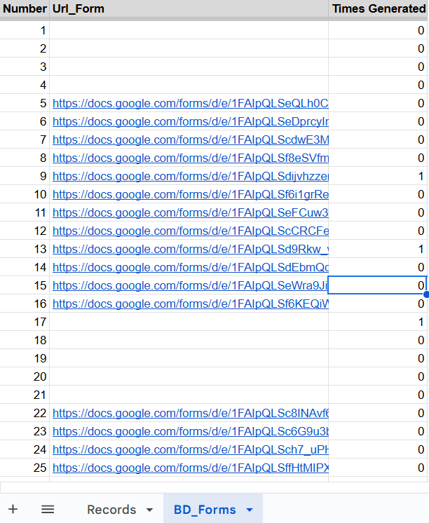
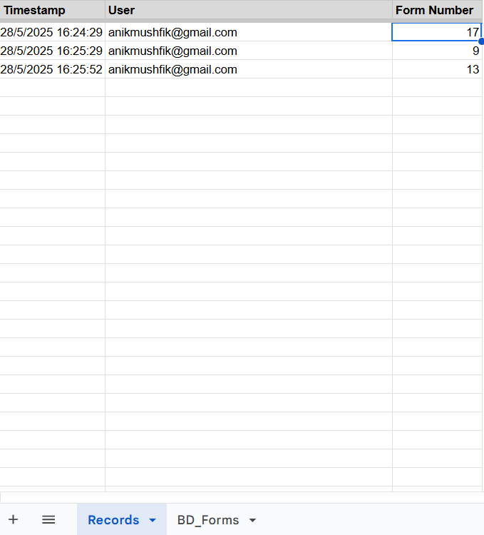
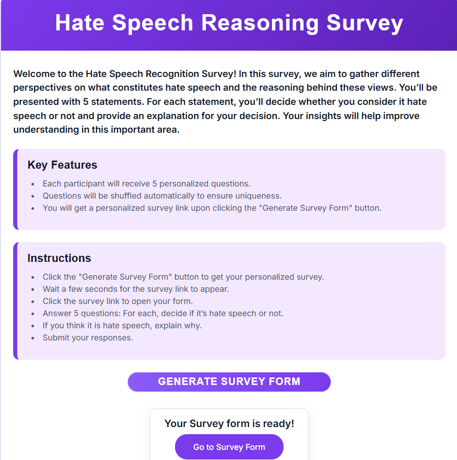
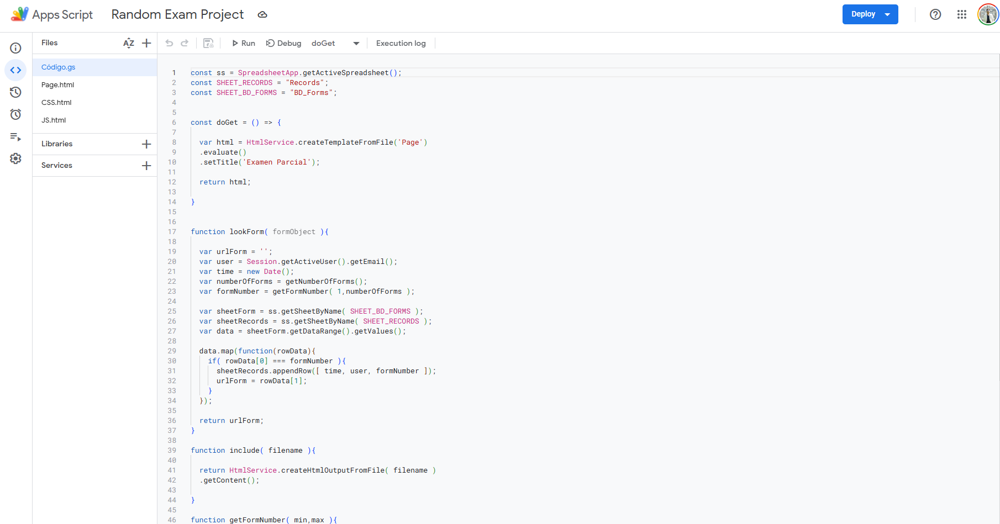

The problem
The project required assigning participants to 20 different Google Forms. Manual distribution created three issues: high coordination overhead, uneven response counts, and poor visibility into completion status.
Paid survey tooling was considered, but budget constraints required a no-cost architecture.
System design
I built a lightweight system with two spreadsheet tabs and one Apps Script web app:
- BD Forms tab: stores all form URLs and live assignment counts.
- Records tab: logs each assignment event with timestamp and selected form.
- Apps Script web app: routes users to an eligible form and writes logs automatically.

Count tracking logic
Assignment counts were computed with an array formula so each form's usage updates as soon as a record is appended.
=ArrayFormula(IF(ISBLANK(B2:B),"",COUNTIF(Records!C2:C,B2:B)))This made response balancing visible in real time without manual auditing.

App flow
- User opens one shared public URL.
- User clicks a generate button.
- Server function selects an eligible form that has not reached threshold.
- Selection is logged to Records.
- UI returns user-specific destination form link.

Implementation notes
Core Apps Script functions handled three responsibilities: rendering the entry page, selecting a valid target form, and writing assignment logs. Once configured, the workflow required no daily manual intervention.

Outcome
- 20 form links were replaced by one public access point.
- Distribution became randomized and balanced.
- Response cap monitoring became automatic.
- Solution cost remained zero.
The biggest win was not only automation, but predictability. One link removed participant confusion while preserving controlled assignment logic.